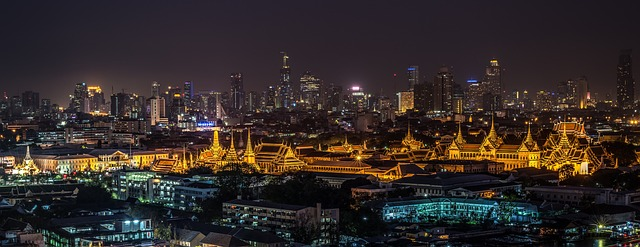
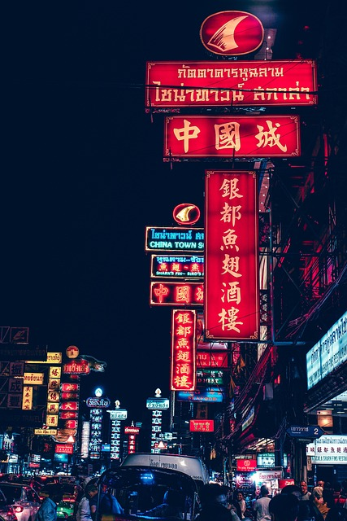

Bangkok City:
Bangkok, the capital of Thailand, is a vibrant metropolis known for its rich culture,
street food, temples, and nightlife. It blends modern skyscrapers with historic landmarks
like the Grand Palace and Wat Arun, offering visitors a dynamic and colorful experience.

Phi Phi Island :
Phi Phi Island, located in the Andaman Sea, is famous for its stunning beaches,
crystal-clear waters, and dramatic limestone cliffs. It's a popular spot for snorkeling,
diving, and boat tours, especially around Maya Bay, made famous by the movie The Beach.

Bangkok Chinatown (Yaowarat):
Bangkok’s Chinatown is a bustling district full of gold shops, Chinese temples, and endless street food stalls.
By day, it’s great for shopping and sightseeing, and by night, it transforms into a lively food haven serving
dim sum, seafood, and Thai-Chinese fusion dishes.
Image by Pixaday